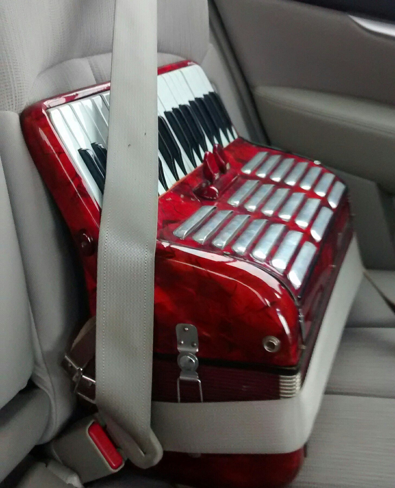

Accordions I have owned/worked on.
MONICA | |
|---|---|
|  | Strapped in snugly for a nice car ride. (sort of) named for Mambo No. 5. |
|
STATS: Make/model: Victoria Castelfidardo "Armonia Jr." | |
|
My "accordion countup" on the accordion index is actually the amount of time I've had Monica. I bought her at a little consignment store down the street for $98.50, and, well, she's a hundred dollar accordion alright. (For reference, a good used accordion usually comes in somewhere around $400.) All the notes sound more or less correctly when you hit the key, and that's all I really need to learn an instrument. But she's a bit of a fixer-upper, so it's a good thing that I enjoy some fixin' uppin'. Something slightly unusual is that she has 12 rows but only 4 bass buttons (counterbass, bass, major, minor) per row. I don't miss those 7th or dim chords yet, but I suspect I soon will. | |
|
REPAIR LOG (show/hide lists)
|
FUTURE REPAIRS (show/hide lists)
|
I also have this simple Schylling toy accordion. It's a diatonic button accordion in the key of C, with only 2 bass buttons. It's more or less a hand-operated harmonica, and quite frankly, it sucks. The buttons get stuck and the bellows leak and stick like mad.
Still, I'm thinking about modding or rebuilding it somehow. I think it would be a fun project.
{kind=link}
{kind=link}